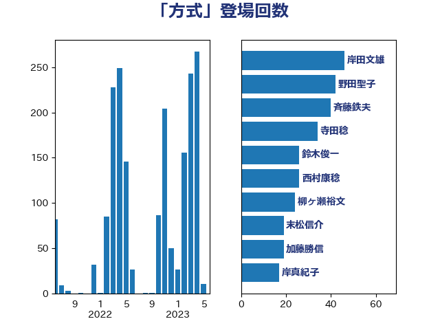

単語「方式」

| 岸田文雄 | 自由民主党 | 46 回 |
| 野田聖子 | 自由民主党 | 42 回 |
| 斉藤鉄夫 | 公明党 | 40 回 |
| 寺田稔 | 自由民主党 | 34 回 |
| 鈴木俊一 | 自由民主党 | 26 回 |
| 西村康稔 | 自由民主党 | 26 回 |
| 柳ヶ瀬裕文 | 日本維新の会 | 24 回 |
| 末松信介 | 自由民主党 | 19 回 |
| 加藤勝信 | 自由民主党 | 19 回 |
| 岸真紀子 | 立憲民主党 | 17 回 |
| 井坂信彦 | 立憲民主党 | 17 回 |
| 空本誠喜 | 日本維新の会 | 16 回 |
| 進藤金日子 | 自由民主党 | 15 回 |
| 岡田直樹 | 自由民主党 | 15 回 |
| 竹詰仁 | 国民民主党 | 14 回 |
| 後藤茂之 | 自由民主党 | 14 回 |
| 小森卓郎 | 自由民主党 | 14 回 |
| 中島克仁 | 立憲民主党 | 14 回 |
| 川田龍平 | 立憲民主党 | 13 回 |
| 大島敦 | 立憲民主党 | 13 回 |
| 金子恭之 | 自由民主党 | 12 回 |
| 舟山康江 | 国民民主党 | 12 回 |
| 田嶋要 | 立憲民主党 | 12 回 |
| 熊谷裕人 | 立憲民主党 | 12 回 |
| 北神圭朗 | 無所属 | 12 回 |
| 伊波洋一 | 無所属 | 12 回 |
| 馬場伸幸 | 日本維新の会 | 11 回 |
| 輿水恵一 | 公明党 | 11 回 |
| 神津たけし | 立憲民主党 | 11 回 |
| 玉木雄一郎 | 国民民主党 | 11 回 |
| 塩川鉄也 | 日本共産党 | 11 回 |
| 田村貴昭 | 日本共産党 | 10 回 |
| 松本剛明 | 自由民主党 | 10 回 |
| 小倉將信 | 自由民主党 | 10 回 |
| 城井崇 | 立憲民主党 | 10 回 |
| 音喜多駿 | 日本維新の会 | 9 回 |
| 水岡俊一 | 立憲民主党 | 9 回 |
| 森屋隆 | 立憲民主党 | 9 回 |
| 梅村聡 | 日本維新の会 | 9 回 |
| 宮本徹 | 日本共産党 | 9 回 |
| 高橋千鶴子 | 日本共産党 | 8 回 |
| 野間健 | 立憲民主党 | 8 回 |
| 山本順三 | 自由民主党 | 8 回 |
| 小川淳也 | 立憲民主党 | 8 回 |
| 塩村あやか | 立憲民主党 | 8 回 |
| 堤かなめ | 立憲民主党 | 8 回 |
| 長谷川淳二 | 自由民主党 | 7 回 |
| 足立康史 | 日本維新の会 | 7 回 |
| 萩生田光一 | 自由民主党 | 7 回 |
| 緑川貴士 | 立憲民主党 | 7 回 |
| 田村智子 | 日本共産党 | 7 回 |
| 田村まみ | 国民民主党 | 7 回 |
| 沢田良 | 日本維新の会 | 7 回 |
| 小野泰輔 | 日本維新の会 | 7 回 |
| 小寺裕雄 | 自由民主党 | 7 回 |
| 落合貴之 | 立憲民主党 | 6 回 |
| 斎藤アレックス | 国民民主党 | 6 回 |
| 岬麻紀 | 日本維新の会 | 6 回 |
| 中西祐介 | 自由民主党 | 6 回 |
| 高木宏壽 | 自由民主党 | 5 回 |
| 道下大樹 | 立憲民主党 | 5 回 |
| 足立敏之 | 自由民主党 | 5 回 |
| 芳賀道也 | 国民民主党 | 5 回 |
| 舩後靖彦 | れいわ新選組 | 5 回 |
| 篠原豪 | 立憲民主党 | 5 回 |
| 福島伸享 | 無所属 | 5 回 |
| 神谷宗幣 | 参政党 | 5 回 |
| 源馬謙太郎 | 立憲民主党 | 5 回 |
| 浜野喜史 | 国民民主党 | 5 回 |
| 河野太郎 | 自由民主党 | 5 回 |
| 庄子賢一 | 公明党 | 5 回 |
| 岡本あき子 | 立憲民主党 | 5 回 |
| 和田義明 | 自由民主党 | 5 回 |
| 古川禎久 | 自由民主党 | 5 回 |
| 伊東信久 | 日本維新の会 | 5 回 |
| 中川貴元 | 自由民主党 | 5 回 |
| 上田清司 | 国民民主党 | 5 回 |
| 阿部司 | 日本維新の会 | 4 回 |
| 長浜博行 | 無所属 | 4 回 |
| 西岡秀子 | 国民民主党 | 4 回 |
| 秋本真利 | 自由民主党 | 4 回 |
| 福島みずほ | 社会民主党 | 4 回 |
| 田畑裕明 | 自由民主党 | 4 回 |
| 田島麻衣子 | 立憲民主党 | 4 回 |
| 猪瀬直樹 | 日本維新の会 | 4 回 |
| 浜田靖一 | 自由民主党 | 4 回 |
| 池下卓 | 日本維新の会 | 4 回 |
| 柚木道義 | 立憲民主党 | 4 回 |
| 末松義規 | 立憲民主党 | 4 回 |
| 新藤義孝 | 自由民主党 | 4 回 |
| 掘井健智 | 日本維新の会 | 4 回 |
| 後藤祐一 | 立憲民主党 | 4 回 |
| 工藤彰三 | 自由民主党 | 4 回 |
| 山田勝彦 | 立憲民主党 | 4 回 |
| 安江伸夫 | 公明党 | 4 回 |
| 塩田博昭 | 公明党 | 4 回 |
| 伊藤孝恵 | 国民民主党 | 4 回 |
| 井林辰憲 | 自由民主党 | 4 回 |
| 井上哲士 | 日本共産党 | 4 回 |
| 中司宏 | 日本維新の会 | 4 回 |
| 鈴木義弘 | 国民民主党 | 3 回 |
| 金村龍那 | 日本維新の会 | 3 回 |
| 遠藤良太 | 日本維新の会 | 3 回 |
| 豊田俊郎 | 自由民主党 | 3 回 |
| 谷田川元 | 立憲民主党 | 3 回 |
| 西田昌司 | 自由民主党 | 3 回 |
| 藤巻健太 | 日本維新の会 | 3 回 |
| 藤井比早之 | 自由民主党 | 3 回 |
| 竹内真二 | 公明党 | 3 回 |
| 礒崎哲史 | 国民民主党 | 3 回 |
| 田中健 | 国民民主党 | 3 回 |
| 浮島智子 | 公明党 | 3 回 |
| 浦野靖人 | 日本維新の会 | 3 回 |
| 浅野哲 | 国民民主党 | 3 回 |
| 河西宏一 | 公明党 | 3 回 |
| 永岡桂子 | 自由民主党 | 3 回 |
| 横沢高徳 | 立憲民主党 | 3 回 |
| 森山浩行 | 立憲民主党 | 3 回 |
| 梅村みずほ | 日本維新の会 | 3 回 |
| 枝野幸男 | 立憲民主党 | 3 回 |
| 東徹 | 日本維新の会 | 3 回 |
| 末次精一 | 立憲民主党 | 3 回 |
| 斎藤洋明 | 自由民主党 | 3 回 |
| 打越さく良 | 立憲民主党 | 3 回 |
| 山添拓 | 日本共産党 | 3 回 |
| 山井和則 | 立憲民主党 | 3 回 |
| 室井邦彦 | 日本維新の会 | 3 回 |
| 守島正 | 日本維新の会 | 3 回 |
| 太田房江 | 自由民主党 | 3 回 |
| 大西健介 | 立憲民主党 | 3 回 |
| 嘉田由紀子 | 無所属 | 3 回 |
| 吉田とも代 | 日本維新の会 | 3 回 |
| 住吉寛紀 | 日本維新の会 | 3 回 |
| 伊藤渉 | 公明党 | 3 回 |
| 中川康洋 | 公明党 | 3 回 |
| 上野通子 | 自由民主党 | 3 回 |
| 上月良祐 | 自由民主党 | 3 回 |
| 三上えり | 立憲民主党 | 3 回 |
| おおつき紅葉 | 立憲民主党 | 3 回 |
| 齋藤健 | 自由民主党 | 2 回 |
| 高木啓 | 自由民主党 | 2 回 |
| 須藤元気 | 無所属 | 2 回 |
| 青柳陽一郎 | 立憲民主党 | 2 回 |
| 青山大人 | 立憲民主党 | 2 回 |
| 青山周平 | 自由民主党 | 2 回 |
| 阿部知子 | 立憲民主党 | 2 回 |
| 鈴木憲和 | 自由民主党 | 2 回 |
| 野田国義 | 立憲民主党 | 2 回 |
| 野上浩太郎 | 自由民主党 | 2 回 |
| 藤田文武 | 日本維新の会 | 2 回 |
| 船田元 | 自由民主党 | 2 回 |
| 羽田次郎 | 立憲民主党 | 2 回 |
| 緒方林太郎 | 無所属 | 2 回 |
| 紙智子 | 日本共産党 | 2 回 |
| 米山隆一 | 立憲民主党 | 2 回 |
| 石川大我 | 立憲民主党 | 2 回 |
| 石井苗子 | 日本維新の会 | 2 回 |
| 石井章 | 日本維新の会 | 2 回 |
| 白石洋一 | 立憲民主党 | 2 回 |
| 田所嘉徳 | 自由民主党 | 2 回 |
| 湯原俊二 | 立憲民主党 | 2 回 |
| 渡辺周 | 立憲民主党 | 2 回 |
| 清水貴之 | 日本維新の会 | 2 回 |
| 浜田聡 | NHK党 | 2 回 |
| 浅田均 | 日本維新の会 | 2 回 |
| 河野義博 | 公明党 | 2 回 |
| 武部新 | 自由民主党 | 2 回 |
| 櫻井周 | 立憲民主党 | 2 回 |
| 森田俊和 | 立憲民主党 | 2 回 |
| 柴田巧 | 日本維新の会 | 2 回 |
| 松川るい | 自由民主党 | 2 回 |
| 村田享子 | 立憲民主党 | 2 回 |
| 本田顕子 | 自由民主党 | 2 回 |
| 木村次郎 | 自由民主党 | 2 回 |
| 朝日健太郎 | 自由民主党 | 2 回 |
| 早稲田ゆき | 立憲民主党 | 2 回 |
| 新垣邦男 | 立憲民主党 | 2 回 |
| 斎藤嘉隆 | 立憲民主党 | 2 回 |
| 徳永エリ | 立憲民主党 | 2 回 |
| 平口洋 | 自由民主党 | 2 回 |
| 岩田和親 | 自由民主党 | 2 回 |
| 岡本三成 | 公明党 | 2 回 |
| 山本剛正 | 日本維新の会 | 2 回 |
| 山崎正恭 | 公明党 | 2 回 |
| 山下雄平 | 自由民主党 | 2 回 |
| 小西洋之 | 立憲民主党 | 2 回 |
| 小沼巧 | 立憲民主党 | 2 回 |
| 宮本岳志 | 日本共産党 | 2 回 |
| 大塚耕平 | 国民民主党 | 2 回 |
| 堀場幸子 | 日本維新の会 | 2 回 |
| 和田政宗 | 自由民主党 | 2 回 |
| 吉田宣弘 | 公明党 | 2 回 |
| 吉川赳 | 無所属 | 2 回 |
| 吉川元 | 立憲民主党 | 2 回 |
| 古川康 | 自由民主党 | 2 回 |
| 古川元久 | 国民民主党 | 2 回 |
| 倉林明子 | 日本共産党 | 2 回 |
| 佐藤公治 | 立憲民主党 | 2 回 |
| 伊藤岳 | 日本共産党 | 2 回 |
| 伊佐進一 | 公明党 | 2 回 |
| 仁木博文 | 無所属 | 2 回 |
| 五十嵐清 | 自由民主党 | 2 回 |
| 串田誠一 | 日本維新の会 | 2 回 |
| 中田宏 | 自由民主党 | 2 回 |
| 中条きよし | 日本維新の会 | 2 回 |
| 下野六太 | 公明党 | 2 回 |
| 一谷勇一郎 | 日本維新の会 | 2 回 |
| 鬼木誠 | 立憲民主党 | 1 回 |
| 高見康裕 | 自由民主党 | 1 回 |
| 高橋克法 | 自由民主党 | 1 回 |
| 青柳仁士 | 日本維新の会 | 1 回 |
| 青木愛 | 立憲民主党 | 1 回 |
| 階猛 | 立憲民主党 | 1 回 |
| 阿達雅志 | 自由民主党 | 1 回 |
| 長谷川英晴 | 自由民主党 | 1 回 |
| 長妻昭 | 立憲民主党 | 1 回 |
| 金子恵美 | 立憲民主党 | 1 回 |
| 赤嶺政賢 | 日本共産党 | 1 回 |
| 角田秀穂 | 公明党 | 1 回 |
| 西銘恒三郎 | 自由民主党 | 1 回 |
| 西村智奈美 | 立憲民主党 | 1 回 |
| 西村明宏 | 自由民主党 | 1 回 |
| 藤川政人 | 自由民主党 | 1 回 |
| 藤原崇 | 自由民主党 | 1 回 |
| 茂木敏充 | 自由民主党 | 1 回 |
| 若松謙維 | 公明党 | 1 回 |
| 笠井亮 | 日本共産党 | 1 回 |
| 竹谷とし子 | 公明党 | 1 回 |
| 窪田哲也 | 公明党 | 1 回 |
| 福田昭夫 | 立憲民主党 | 1 回 |
| 神田憲次 | 自由民主党 | 1 回 |
| 石川香織 | 立憲民主党 | 1 回 |
| 石垣のりこ | 立憲民主党 | 1 回 |
| 田村憲久 | 自由民主党 | 1 回 |
| 田名部匡代 | 立憲民主党 | 1 回 |
| 牧義夫 | 立憲民主党 | 1 回 |
| 牧山ひろえ | 立憲民主党 | 1 回 |
| 片山さつき | 自由民主党 | 1 回 |
| 漆間譲司 | 日本維新の会 | 1 回 |
| 渡辺猛之 | 自由民主党 | 1 回 |
| 清水真人 | 自由民主党 | 1 回 |
| 浜口誠 | 国民民主党 | 1 回 |
| 池畑浩太朗 | 日本維新の会 | 1 回 |
| 比嘉奈津美 | 自由民主党 | 1 回 |
| 梅谷守 | 立憲民主党 | 1 回 |
| 柳本顕 | 自由民主党 | 1 回 |
| 林芳正 | 自由民主党 | 1 回 |
| 松山政司 | 自由民主党 | 1 回 |
| 杉本和巳 | 日本維新の会 | 1 回 |
| 杉尾秀哉 | 立憲民主党 | 1 回 |
| 杉久武 | 公明党 | 1 回 |
| 有村治子 | 自由民主党 | 1 回 |
| 平木大作 | 公明党 | 1 回 |
| 岩渕友 | 日本共産党 | 1 回 |
| 岡田克也 | 立憲民主党 | 1 回 |
| 山際大志郎 | 自由民主党 | 1 回 |
| 山田太郎 | 自由民主党 | 1 回 |
| 山岸一生 | 立憲民主党 | 1 回 |
| 山口壯 | 自由民主党 | 1 回 |
| 尾崎正直 | 自由民主党 | 1 回 |
| 小池晃 | 日本共産党 | 1 回 |
| 小林鷹之 | 自由民主党 | 1 回 |
| 小山展弘 | 立憲民主党 | 1 回 |
| 小宮山泰子 | 立憲民主党 | 1 回 |
| 宮口治子 | 立憲民主党 | 1 回 |
| 大河原まさこ | 立憲民主党 | 1 回 |
| 大島九州男 | れいわ新選組 | 1 回 |
| 国光あやの | 自由民主党 | 1 回 |
| 和田有一朗 | 日本維新の会 | 1 回 |
| 吉良州司 | 無所属 | 1 回 |
| 吉田豊史 | 無所属 | 1 回 |
| 吉田統彦 | 立憲民主党 | 1 回 |
| 吉田はるみ | 立憲民主党 | 1 回 |
| 吉井章 | 自由民主党 | 1 回 |
| 古賀千景 | 立憲民主党 | 1 回 |
| 古川俊治 | 自由民主党 | 1 回 |
| 勝部賢志 | 立憲民主党 | 1 回 |
| 勝俣孝明 | 自由民主党 | 1 回 |
| 前原誠司 | 国民民主党 | 1 回 |
| 井野俊郎 | 自由民主党 | 1 回 |
| 丸川珠代 | 自由民主党 | 1 回 |
| 中山展宏 | 自由民主党 | 1 回 |
| 三木圭恵 | 日本維新の会 | 1 回 |
| 三宅伸吾 | 自由民主党 | 1 回 |
| 三ッ林裕巳 | 自由民主党 | 1 回 |
| ながえ孝子 | 無所属 | 1 回 |
| こやり隆史 | 自由民主党 | 1 回 |